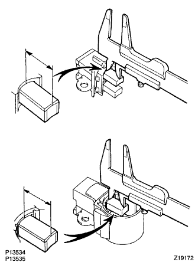

オルタネータASSY オーバーホール（脱着·分解） |
| 1. オルタネータ プーリ取りはずし |
| ＳＳＴ１ーＡ、Ｂ | ０９８２０ー０６０１０ |
|---|---|
| ＳＳＴ２ | ０９８２０ー０６０２０ |
ＳＳＴ１－Ｂを規定トルクで締め付け、ＳＳＴ１－Ａをプーリシャフト部に固定する。
 |
バイスにＳＳＴ２の二面幅を固定する。
オルタネータにＳＳＴ１－Ａ、Ｂが取り付いた状態で、ＳＳＴ２の六角部にプーリロックナットを挿入する。
 |
ＳＳＴ１－Ａをオルタネータの正回転方向に回して、プーリロックナットをゆるめる。
オルタネータをＳＳＴ２から取りはずす。
ＳＳＴ１－Ｂを固定し、ＳＳＴ１－Ａを右に回してゆるめ、オルタネータからＳＳＴ１－Ａ、Ｂを取りはずす。
プーリロックナットおよびオルタネータプーリを取りはずす。
| 2. オルタネータ ブラシ ホルダASSY取りはずし |
リヤエンドカバーを取りはずす。
ブラシカバーを取りはずす。
オルタネータブラシホルダを取りはずす。
| 3. ゼネレータ レギュレータASSY取りはずし |
| 4. オルタネータ ホルダ (ウィズ レクテイファイヤ)取りはずし |
| 5. オルタネータ ロータASSY取りはずし |
ナットおよびコードクリップを取りはずす。
 |
ＳＳＴを使用して、レクティファイヤエンドフレームを取りはずす。
オルタネータロータＡＳＳＹをドライブエンドフレームから手で持ち上げて取りはずす。
| 6. オルタネータ ロータASSY点検 |
 |
ＳＳＴ（トヨタエレクトリカルテスター）を使用して、スリップリング間の抵抗を測定する。
ＳＳＴ（トヨタエレクトリカルテスター）を使用して、スリップリングとロータコア間の抵抗を測定する。
 |
ノギスを使用して、スリップリングの外径を測定する。
| 7. オルタネータ ホルダ (ウィズ レクテイファイヤ)点検 |
通電点検
SST（トヨタエレクトリカルテスター）をダイオードテストレンジにする。
SST（トヨタエレクトリカルテスター）を使用して、レクティファイアのP1、P2、P4←→B間およびP1、P2、P4←→E間の電圧を測定する。
| 点検端子 | 点検条件 | 基準値 |
|---|---|---|
| P1、P2、P4←→B | P1、P2、P4（テスタープラス） B （テスターマイナス） | 0.4 - 0.8 V |
| P1、P2、P4（テスターマイナス） B （テスタープラス） | 約3.0 V | |
| P1、P2、P4←→E | P1、P2、P4（テスタープラス） E （テスターマイナス） | 約3.0 V |
| P1、P2、P4（テスターマイナス） E （テスタープラス） | 0.4 - 0.8 V |
| 8. オルタネータ ブラシ ホルダASSY点検 |
|  |
ノギスを使用して、ブラシの突き出し長さを測定する。
| 9. オルタネータ ロータASSY取り付け |
オルタネータロータをドライブエンドフレームに取り付ける。
ソケットレンチ（２９ｍｍ）およびプレスを使用して、レクティファイヤエンドフレームを圧入する。
 |
ナット４個およびコードクリップを取り付ける。
| 10. オルタネータ ホルダ (ウィズ レクテイファイヤ)取り付け |
| 11. ゼネレータ レギュレータASSY取り付け |
| 12. オルタネータ ブラシ ホルダASSY取り付け |
スクリュ２本でブラシホルダを取り付ける。
 |
ナット３個およびボルトでリヤエンドカバーを取り付ける。
| 13. オルタネータ プーリ取り付け |
| ＳＳＴ１ーＡ、Ｂ | ０９８２０ー０６０１０ |
|---|---|
| ＳＳＴ２ | ０９８２０ー０６０２０ |
オルタネータプーリを取り付け、プーリロックナットを仮付けする。
ＳＳＴ１－Ａをプーリシャフト先端に取り付ける。
ＳＳＴ１－ＢをＳＳＴ１－Ａに取り付ける。
ＳＳＴ１－Ｂを規定トルクで締め付け、ＳＳＴ１－Ａをプーリシャフト部に固定する。
|
バイスにＳＳＴ２の二面幅を固定する。
オルタネータにＳＳＴ１－Ａ、Ｂが取り付いた状態で、ＳＳＴ２の六角部にプーリナットロックを挿入する。
 |
ＳＳＴ１－Ａをオルタネータの逆回転方向に回して、プーリロックナットを締め付ける。
オルタネータをＳＳＴ２から取りはずす。
ＳＳＴ１－Ｂを固定し、ＳＳＴ１－Ａを右に回してゆるめオルタネータからＳＳＴ１－Ａ、Ｂを取りはずす。
プーリがスムースに回転することを確認する。